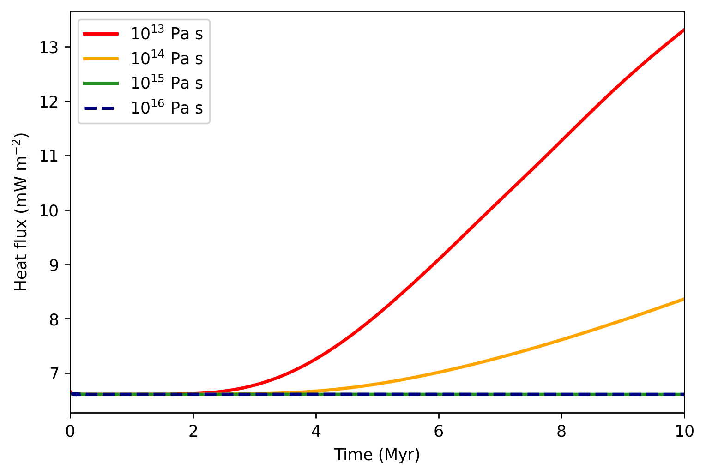

2. Thermal convection - parametric study

Evolution of surface heat flux with respect to time for four different values of basal viscosity.
Download
Here you can download the bash script, the parameter fileand the matplotlib scriptfor the heat flux evolution.
Detailed explanation is given below.
Bash script modification
Compared with the previous example, we now want to perform a parametric study. Let’s assume that the computer has 8 cores
and we want to launch all simulations at once. We change the loop parameter to loop=2 and define over which values the loop should run.
First, two simulations at once will be launched, the third and fourth will be launched once the first and second are finished, respectively.
We choose to explore viscosities \(10^{13},\) \(10^{13}\), \(10^{15}\) and \(10^{16}\) Pa s. As it is easy to
pass an integer from bash script to python, we run the loop over the exponents 13 14 15 16:
# --- Number of cores ---
n_cores=4
# --- Maximum number of cores the script can take ---
n_cores_max=8
# --- Running on background or foreground ---
# background=0 -> running on foreground and output to screen
# background=1 -> running on background and output to file
# >>> Note that a choice loop=1 or loop=2 below always write to file
background=1
# --- Loop over parameters? ---
# loop=0 -> script launches the code once
# loop=1 -> script launches a parametric sweep with one simulation at a time, running at n_cores cores
# loop=2 -> script launches as much as possible until n_cores_max, launches next as the previous ones end
loop=2
.
.
.
elif [ $loop -eq 2 ]; then
# --- Parameter loop ---
for par in 13 14 15 16
do
# --- Waiting loop ---
while true
do
# --- Check every second if there are enough free processors ---
sleep 1
if [ $(ps -ef | grep -v grep | grep main_MF | wc -l) -lt $n_cores_max ]; then
# --- Launch once and exit the waiting loop ---
run_MilleFEuiIle_loop par
break
fi
done
done
fi
Parameter file modification
Compared to the previous tutorial, we only need to do several adjustments to
accomodate from the bash script. The number that the shell script passes
to the python code can be accessed as int(sys.argv[1]).
First, we incorporate this parameter to the directory name, so that every simulation has its own directory:
# --- Name of the directory with results ---
name = "demo_convection_1e" + str(int(sys.argv[1])) + "Pas"
And as the numer represents the viscosity exponent, we define the viscosity at
the melting temperature eta_0 as follows:
# --- Parameters for constant / temperature-dependent viscosity ---
eta_0 = 10.0**int(sys.argv[1])
Plotting
The plotting script reads the statistics files from all four simulations. We provide path to these files, and define the labels that will appear in the legend and the color and style for each of the lines.
# --- Define the directories ---
directories = [
"data_demo_convection_1e13Pas/statistics.dat",
"data_demo_convection_1e14Pas/statistics.dat",
"data_demo_convection_1e15Pas/statistics.dat",
"data_demo_convection_1e16Pas/statistics.dat"]
# --- Define the labels ---
labelnames = [r"$10^{13}$ Pa s",
r"$10^{14}$ Pa s",
r"$10^{15}$ Pa s",
r"$10^{16}$ Pa s"]
# --- Define the line colors ---
colors = ["red", "orange", "forestgreen", "navy"]
# --- Define the line styles ---
styles = ["solid", "solid", "solid", "dashed"]
.
.
.
Finally, we specify that we want to plot the third column in the parameter file
(column = 2, numebered from 0) and call the function plot_time().
# --- Plot the third column in the file ---
column = 2
plot_time(ax0, directories, column, labelnames, colors, styles)